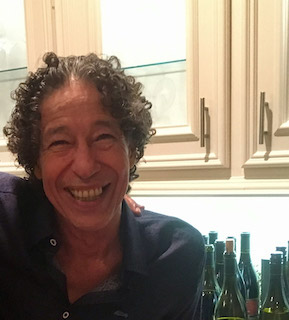

Recommends 2009 Cheval des Andes
Virgilio Cantu, Sommelier at Beckrew Wine House, 2409 W. Alabama. A native of Mexico, Cantu earned his somm stripes from Barcelona University and the Argentinean School of Sommeliers. In 2013, he became certified as a French Wine Scholar, although he admits his greatest passion is for Argentinean wines. After working at several spots in Costa Rica, he moved to Miami and then to Houston, where he landed at the Tasting Room's River Oaks location, which reopened under new ownership as Beckrew in February 2015. Read the original article
